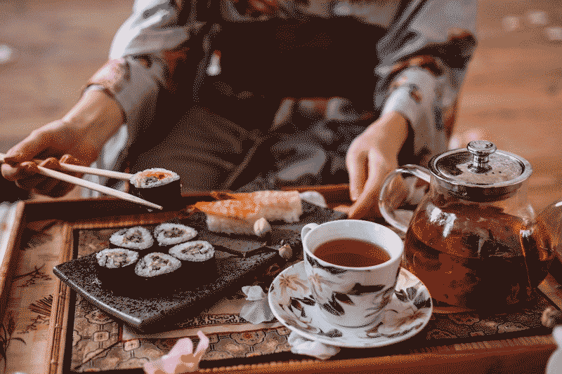
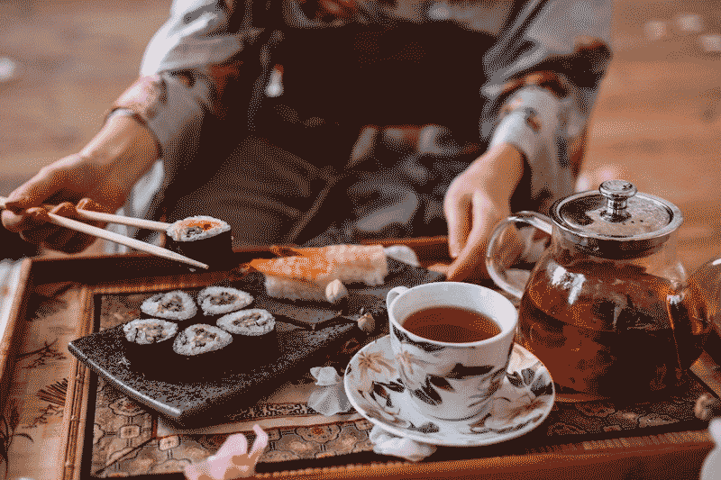

A cultura japonesa é rica e diversa, marcada pelo equilíbrio entre tradição e modernidade. Desde antigos costumes, como a cerimônia do chá e o uso do quimono, até avanços tecnológicos e uma vibrante cena pop, o Japão valoriza tanto o passado quanto o presente. Elementos como o respeito à natureza, à harmonia e ao coletivo permeiam a vida japonesa, refletindo-se na arquitetura, nos jardins e nas práticas sociais.
 


O conceito de "wa" (harmonia) é central e se manifesta no respeito às hierarquias, na etiqueta cuidadosa e na importância dada ao trabalho em grupo. A religião também é plural, com o xintoísmo e o budismo influenciando festivais e cerimônias sazonais, enquanto o zen se destaca em práticas como a meditação e a jardinagem.
.jpeg)
.jpeg)
Na cultura popular, o Japão é famoso por seu impacto global, com o anime, o mangá e os videogames conquistando fãs no mundo inteiro. Essa mistura de tradição e inovação faz com que a cultura japonesa seja única e amplamente respeitada, despertando curiosidade e admiração em pessoas de todas as partes.